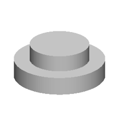
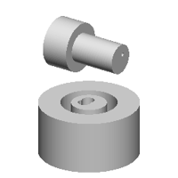
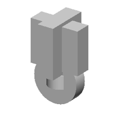
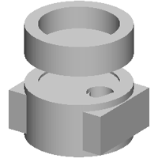
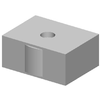
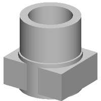
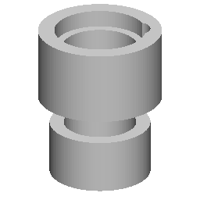
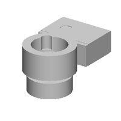
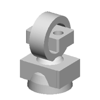
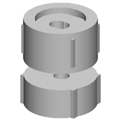

| 정답 |  | | |
| 0 | — | 실행 실패
StdFail_NotDone: GC_MakeArcOfCircle::Value() - no result
4 째 줄 | 1 import cadquery as cq
2 w0=cq.Workplane('YZ',origin=(53,0,0))
3 w1=cq.Workplane('YZ',origin=(21,0,0))
4 r=w0.sketch().segment((17,15),(21,15)).arc((20,17),(19,19)).close().assemble().finalize().extrude(-153).union(w0.sketch().segment((19,15),(21,15)).arc((20,17),(19,19)).close().assemble().finalize().extrude(-107)).union(w1.sketch().arc((19,15),(20,17),(21,19)).segment((19,19)).close().assemble().finalize().extrude(7)) |
| 250 | — | 실행 실패
SyntaxError: unterminated string literal (detected at line 8)
8 째 줄 25 째 글자 | 1 b0 = place(cq.Workplane("XY").box(12.9, 19.9, 14.9, centered=(True, True, False)).faces(">Z").workplane(origin=(0, 0, 14.9)).center(11.1, -10.9).hole(10.9), "y", (0.0, 0.0, -10.9))
2 b1 = place(cq.Workplane("XZ").polyline([(0.0, 0.0), (13.0, 0.0), (13.0, 11.9), (10.0, 11.9), (10.0, 22.9), (0.0, 22.9)]).close().revolve(360, (0, 0, 0), (0, 1, 0)), "y", (-10.9, -10.9, -10.9))
3 b2 = place(cq.Workplane("XZ").polyline([(0.0, 0.0), (11.9, 0.0), (11.9, 11.9), (9.5, 11.9), (9.5, 22.9), (0.0, 22.9)]).close().revolve(360, (0, 0, 0), (0, 1, 0)), "y", (-10.9, -10.9, -10.9))
4 b4 = place(cq.Workplane("XZ").polyline([(0.0, 0.0), (11.9, 0.0), (11.9, 11.9), (9.9, 11.9), (9.9, 22.9), (0.0, 22.9)]).close().revolve(360, (0, 0, 0), (0, 1, 0)), "y", (-10.9, -10.9, -10.9))
5 b4 = place(cq.Workplane("XZ").polyline([(0.0, 0.0), (11.9, 0.0), (11.9, 11.9), (9.9, 11.9), (9.9, 22.9), (0.0, 22.9)]).close().revolve(360, (0, 0, 0), (0, 1, 0)), "y", (-10.9, -10.9, -10.9))
6 b4 = place(cq.Workplane("XZ").polyline([(0.0, 0.0), (11.9, 0.0), (11.9, 11.9), (9.9, 11.9), (9.9, 22.9), (0.0, 22.9)]).close().revolve(360, (0, 0, 0), (0, 1, 0)), "y", (-10.9, -10.9, -10.9))
7 b4 = place(cq.Workplane("XZ").polyline([(0.0, 0.0), (11.9, 0.0), (11.9, 11.9), (9.9, 11.9), (9.9, 22.9), (0.0, 22.9)]).close().revolve(360, (0, 0, 0), (0, 1, 0)), "y", (-10.9, -10.9, -10.9))
8 b4 = place(cq.Workplane("XZ',origin=(0,0,0)) ^
9 b4 = 40.0), (10.9, 40.0), (10.9, 22.9), (9.4, 22.9), (9.4, 11.9), (0.0, 11.9)]).close().revolve(360, (0, 0, 0), (0, 1, 0)), "y", (-10.9, -10.9, -10.9))
10 b4 = place(cq.Workplane("XZ").polyline([(0. |
| 500 | — | 실행 실패
NameError: name 'b3' is not defined
4 째 줄 | 1 b0 = place(cq.Workplane("XY").box(100.0, 40.0, 26.0, centered=(True, True, False)).faces(">Z").workplane(origin=(0, 0, 26.0)).center(-10.0, -10.0).hole(10.0), "z", (-10.0, 0.0, 0.0))
2 b1 = place(cq.Workplane("XY").box(40.0, 38.0, 10.0, centered=(True, True, False)).faces(">Z").workplane(origin=(0, 0, 10.0)).center(-10.0, 0.0).hole(10.0, 10.0), "z", (-10.0, 0.0, 0.0))
3 b2 = place(cq.Workplane("XY").box(40.0, 26.0, 10.0, centered=(True, True, False)).faces(">Z").workplane(origin=(0, 0, 10.0)).center(-10.0, 0.0).hole(10.0, 10.0), "z", (-10.0, 0.0, 0.0))
4 result = b0.union(b1.union(b2.union(b3.union(b4)))) |
| 750 |  | IoU 0.61 | 1 b0 = place(cq.Workplane("XZ").polyline([(0.0, 0.0), (24.9, 0.0), (24.9, 11.1), (18.1, 11.1), (18.1, 21.1), (0.0, 21.1)]).close().revolve(360, (0, 0, 0), (0, 1, 0)).faces(">Z").workplane(origin=(0, 0, 21.1)).center(1.3, -1.1).hole(10.8), "z", (0.0, 0.0, 0.0))
2 b1 = place(cq.Workplane("XZ").polyline([(0.0, 0.0), (27.7, 0.0), (27.7, 11.1), (18.1, 11.1), (18.1, 21.1), (0.0, 21.1)]).close().revolve(360, (0, 0, 0), (0, 1, 0)), "z", (0.0, 0.0, 0.0))
3 result = b0.union(b1) |
| 1000 |  | IoU 0.44 | 1 b0 = place(cq.Workplane("XZ").polyline([(0.0, 0.0), (20.0, 0.0), (20.0, 21.0), (11.2, 21.0), (11.2, 4.8), (0.0, 4.8)]).close().revolve(360, (0, 0, 0), (0, 1, 0)).faces(">Z").workplane(origin=(0, 0, 21.0)).center(-1.5, 1.5).hole(10.0), "z", (0.0, 0.0, -13.2))
2 b1 = place(cq.Workplane("XZ").polyline([(0.0, 0.0), (10.0, 0.0), (10.0, 11.0), (6.0, 11.0), (6.0, 30.0), (0.0, 30.0)]).close().revolve(360, (0, 0, 0), (0, 1, 0)).faces(">Z").workplane(origin=(0, 0, 30.0)).center(-1.5, 1.5).hole(1.5), "x", (0.0, 0.0, 19.9))
3 b2 = place(cq.Workplane("XZ").polyline([(0.0, 0.0), (10.0, 0.0), (10.0, 11.0), (7.0, 11.0), (7.0, 21.0), (0.0, 21.0)]).close().revolve(360, (0, 0, 0), (0, 1, 0)).faces(">Z").workplane(origin=(0, 0, 21.0)).center(-1.5, 1.5).hole(5.0).faces(">Z").workplane(origin=(0, 0, 21.0)).center(-1.5, -1.0).hole(5.0), "z", (0.0, 0.0, -13.2))
4 result = b0.union(b1.union(b2)) |
| 1250 |  | IoU 0.58 | 1 b0 = place(cq.Workplane("XZ").polyline([(0.0, 0.0), (10.0, 0.0), (10.0, 11.6), (6.5, 11.6), (6.5, 3.9), (0.0, 3.9)]).close().revolve(360, (0, 0, 0), (0, 1, 0)).faces(">Z").workplane(origin=(0, 0, 3.9)).center(1.5, -1.0).hole(10.0, 10.0), "z", (0.0, 0.0, -13.5))
2 b1 = place(cq.Workplane("XZ").polyline([(0.0, 0.0), (20.0, 0.0), (20.0, 11.6), (10.0, 11.6), (10.0, 3.1), (0.0, 3.1)]).close().revolve(360, (0, 0, 0), (0, 1, 0)).faces(">Z").workplane(origin=(0, 0, 11.6)).center(10.0, -1.0).hole(10.0, 7.3), "y", (0.0, 0.0, -13.5))
3 b2 = place(cq.Workplane("XY").box(44.4, 38.4, 14.6, centered=(True, True, False)).faces(">Z").workplane(origin=(0, 0, 14.6)).center(10.0, -1.0).rect(10.0, 7.0).cutBlind(-11.0), "y", (0.0, 0.0, 15.5))
4 b3 = place(cq.Workplane("XY").box(44.4, 38.4, 14.6, centered=(True, True, False)).faces(">Z").workplane(origin=(0, 0, 14.6)).center(10.0, -1.0).rect(10.0, 7.0).cutBlind(-10.0), "x", (0.0, 0.0, 15.5))
5 result = b0.union(b1.union(b2.union(b3))) |
| 1500 |  | IoU 0.38 | 1 b0 = place(cq.Workplane("XY").box(40.9, 31.1, 15.6, centered=(True, True, False)).faces(">Z").workplane(origin=(0, 0, 15.6)).center(10.0, 1.1).hole(10.0), "z", (0.0, 0.0, -13.0))
2 b1 = place(cq.Workplane("XZ").polyline([(0.0, 0.0), (20.0, 0.0), (20.0, 21.0), (15.0, 21.0), (15.0, 4.8), (0.0, 4.8)]).close().revolve(360, (0, 0, 0), (0, 1, 0)).faces(">Z").workplane(origin=(0, 0, 21.0)).center(10.0, 1.0).hole(11.0), "z", (0.0, 0.0, -13.0))
3 b2 = place(cq.Workplane("XZ").polyline([(0.0, 0.0), (20.0, 0.0), (20.0, 11.9), (15.0, 11.9), (15.0, 3.1), (0.0, 3.1)]).close().revolve(360, (0, 0, 0), (0, 1, 0)).faces(">Z").workplane(origin=(0, 0, 11.9)).center(10.0, 1.0).hole(10.0), "z", (0.0, 0.0, 15.0))
4 b3 = place(cq.Workplane("XY").circle(19.0).extrude(19.0).faces(">Z").workplane(origin=(0, 0, 19.0)).center(10.0, -1.0).hole(10.0, 10.0), "z", (0.0, 0.0, -13.0))
5 result = b0.union(b1.union(b2.union(b3))) |
| 1750 |  | IoU 0.53 | 1 b0 = place(cq.Workplane("XZ").polyline([(0.0, 0.0), (20.9, 0.0), (20.9, 19.9), (13.8, 19.9), (13.8, 3.7), (0.0, 3.7)]).close().revolve(360, (0, 0, 0), (0, 1, 0)), "z", (17.7, 0.0, 0.0))
2 b1 = place(cq.Workplane("XZ").polyline([(0.0, 0.0), (20.9, 0.0), (20.9, 17.9), (15.1, 17.9), (15.1, 3.7), (0.0, 3.7)]).close().revolve(360, (0, 0, 0), (0, 1, 0)), "z", (17.7, 0.0, 0.0))
3 b2 = place(cq.Workplane("XZ").polyline([(0.0, 0.0), (20.9, 0.0), (20.9, 17.9), (15.1, 17.9), (15.1, 3.7), (0.0, 3.7)]).close().revolve(360, (0, 0, 0), (0, 1, 0)), "z", (17.7, 0.0, 0.0))
4 b3 = place(cq.Workplane("XY").box(39.0, 31.8, 15.2, centered=(True, True, False)).faces(">Z").workplane(origin=(0, 0, 15.2)).center(-1.3, -1.2).hole(6.8).faces(">Z").workplane(origin=(0, 0, 15.2)).center(1.3, 1.8).hole(6.0), "z", (17.7, 0.0, 0.0))
5 b4 = place(cq.Workplane("XY").box(51.9, 39.2, 23.2, centered=(True, True, False)).faces(">Z").workplane(origin=(0, 0, 23.2)).center(-1.3, -1.4).hole(10.0, 11.2), "z", (17.7, 0.0, 0.0))
6 result = b0.union(b1.union(b2.union(b3.union(b4)))) |
| 2000 |  | IoU 0.40 | 1 b0 = place(cq.Workplane("XZ").polyline([(0.0, 0.0), (25.0, 0.0), (25.0, 29.9), (18.2, 29.9), (18.2, 10.1), (0.0, 10.1)]).close().revolve(360, (0, 0, 0), (0, 1, 0)).faces(">Z").workplane(origin=(0, 0, 29.9)).center(-1.3, 1.0).hole(10.9), "z", (0.0, 0.0, -15.2))
2 b1 = place(cq.Workplane("XZ").polyline([(0.0, 0.0), (24.0, 0.0), (24.0, 29.9), (17.4, 29.9), (17.4, 10.0), (0.0, 10.0)]).close().revolve(360, (0, 0, 0), (0, 1, 0)).faces(">Z").workplane(origin=(0, 0, 29.9)).center(1.3, 1.0).hole(12.0, 15.0).faces(">Z").workplane(origin=(0, 0, 29.9)).center(1.5, -1.0).hole(12.0), "z", (0.0, 0.0, 15.2))
3 b2 = place(cq.Workplane("XY").box(55.0, 48.9, 23.0, centered=(True, True, False)).faces(">Z").workplane(origin=(0, 0, 23.0)).center(-1.3, -1.0).hole(11.9).faces(">Z").workplane(origin=(0, 0, 23.0)).center(1.9, 1.0).hole(11.0), "z", (0.0, 0.0, -15.2))
4 result = b0.union(b1.union(b2)) |
| 2250 |  | IoU 0.48 | 1 b0 = place(cq.Workplane("XZ").polyline([(0.0, 0.0), (25.7, 0.0), (25.7, 29.9), (18.9, 29.9), (18.9, 10.1), (0.0, 10.1)]).close().revolve(360, (0, 0, 0), (0, 1, 0)).faces(">Z").workplane(origin=(0, 0, 29.9)).center(11.1, 10.1).hole(12.0), "z", (0.0, 0.0, 15.6))
2 b1 = place(cq.Workplane("XZ").polyline([(0.0, 0.0), (20.9, 0.0), (20.9, 21.9), (15.0, 21.9), (15.0, 4.7), (0.0, 4.7)]).close().revolve(360, (0, 0, 0), (0, 1, 0)), "z", (0.0, 0.0, -22.2))
3 b2 = place(cq.Workplane("XZ").polyline([(0.0, 0.0), (20.9, 0.0), (20.9, 15.9), (15.4, 15.9), (15.4, 3.8), (0.0, 3.8)]).close().revolve(360, (0, 0, 0), (0, 1, 0)), "z", (0.0, 0.0, 15.6))
4 b3 = place(cq.Workplane("XZ").polyline([(0.0, 0.0), (20.9, 0.0), (20.9, 15.9), (15.1, 15.9), (15.1, 3.6), (0.0, 3.6)]).close().revolve(360, (0, 0, 0), (0, 1, 0)).faces(">Z").workplane(origin=(0, 0, 15.9)).center(10.9, 10.3).hole(11.6, 10.3), "z", (0.0, 0.0, -22.2))
5 result = b0.union(b1.union(b2.union(b3))) |
| 2500 |  | IoU 0.59 | 1 b0 = place(cq.Workplane("XY").box(52.9, 31.9, 21.6, centered=(True, True, False)).faces(">Z").workplane(origin=(0, 0, 21.6)).center(-10.0, 1.0).hole(11.0), "z", (0.0, 19.6, 10.0))
2 b1 = place(cq.Workplane("XY").box(52.9, 39.8, 21.0, centered=(True, True, False)).faces(">Z").workplane(origin=(0, 0, 21.0)).center(-10.0, 10.0).hole(10.0, 10.0), "z", (0.0, 19.6, 10.0))
3 b2 = place(cq.Workplane("XZ").polyline([(0.0, 0.0), (25.0, 0.0), (25.0, 25.0), (17.0, 25.0), (17.0, 10.1), (0.0, 10.1)]).close().revolve(360, (0, 0, 0), (0, 1, 0)).faces(">Z").workplane(origin=(0, 0, 25.0)).center(-10.0, 10.0).hole(11.0, 13.0), "z", (0.0, -20.0, 10.0))
4 b3 = place(cq.Workplane("XZ").polyline([(0.0, 0.0), (20.9, 0.0), (20.9, 15.6), (15.4, 15.6), (15.4, 3.8), (0.0, 3.8)]).close().revolve(360, (0, 0, 0), (0, 1, 0)), "z", (0.0, -20.0, -15.0))
5 b4 = place(cq.Workplane("XY").box(50.9, 31.9, 13.0, centered=(True, True, False)).faces(">Z").workplane(origin=(0, 0, 13.0)).center(-1.3, 1.1).hole(10.0, 8.0), "z", (0.0, 19.6, 10.0))
6 result = b0.union(b1.union(b2.union(b3.union(b4)))) |
| 2750 |  | IoU 0.50 | 1 b0 = place(cq.Workplane("XZ").polyline([(0.0, 0.0), (24.2, 0.0), (23.2, 10.1), (20.8, 19.3), (17.1, 27.1), (12.2, 33.3), (6.2, 37.6), (0.0, 39.3)]).close().revolve(360, (0, 0, 0), (0, 1, 0)), "z", (15.6, 0.0, -15.2))
2 b1 = place(cq.Workplane("XZ").polyline([(0.0, 0.0), (25.0, 0.0), (25.0, 19.0), (17.0, 19.0), (17.0, 4.7), (0.0, 4.7)]).close().revolve(360, (0, 0, 0), (0, 1, 0)).faces(">Z").workplane(origin=(0, 0, 19.0)).center(1.3, -1.1).hole(11.2, 10.2), "x", (15.6, 0.0, 22.2))
3 b2 = place(cq.Workplane("XY").box(44.2, 39.2, 21.0, centered=(True, True, False)).faces(">Z").workplane(origin=(0, 0, 21.0)).center(-1.9, -1.0).hole(11.0, 11.0).faces(">Z").workplane(origin=(0, 0, 21.0)).center(1.5, -1.0).hole(11.0, 10.8), "z", (15.6, 0.0, -15.2))
4 b3 = place(cq.Workplane("XY").box(43.0, 31.1, 15.0, centered=(True, True, False)).faces(">Z").workplane(origin=(0, 0, 15.0)).center(11.6, -1.0).hole(11.0, 8.8).edges("|Z").fillet(2.7), "z", (15.6, 0.0, 22.2))
5 b4 = place(cq.Workplane("XY").box(51.2, 38.2, 21.0, centered=(True, True, False)).faces(">Z").workplane(origin=(0, 0, 21.0)).center(-1.9, -1.0).hole(11.2, 11.2).faces(">Z").workplane(origin=(0, 0, 21.0)).center(1.9, -1.0).hole(11.0), "z", (15.6, 0.0, -15.2))
6 result = b0.union(b1.union(b2.union(b3.union(b4)))) |
| 3000 |  | IoU 0.45 | 1 b0 = place(cq.Workplane("XZ").polyline([(0.0, 0.0), (25.2, 0.0), (25.2, 29.9), (17.4, 29.9), (17.4, 10.1), (0.0, 10.1)]).close().revolve(360, (0, 0, 0), (0, 1, 0)).faces(">Z").workplane(origin=(0, 0, 29.9)).center(-1.3, 10.3).hole(12.0), "z", (0.0, 0.0, 15.5))
2 b1 = place(cq.Workplane("XZ").polyline([(0.0, 0.0), (25.0, 0.0), (25.0, 21.0), (16.1, 21.0), (16.1, 4.8), (0.0, 4.8)]).close().revolve(360, (0, 0, 0), (0, 1, 0)).faces(">Z").workplane(origin=(0, 0, 21.0)).center(1.3, -1.0).hole(11.1, 11.2), "z", (0.0, 0.0, -22.2))
3 b2 = place(cq.Workplane("XY").box(43.0, 31.9, 21.0, centered=(True, True, False)).faces(">Z").workplane(origin=(0, 0, 21.0)).center(-1.9, -1.0).hole(11.0, 11.0).faces(">Z").workplane(origin=(0, 0, 21.0)).center(1.6, -1.0).hole(11.0), "z", (0.0, 0.0, 15.5))
4 b3 = place(cq.Workplane("XY").box(44.2, 31.9, 21.0, centered=(True, True, False)).faces(">Z").workplane(origin=(0, 0, 21.0)).center(1.4, -1.0).hole(11.0, 10.9).faces(">Z").workplane(origin=(0, 0, 21.0)).center(1.6, -1.0).hole(11.0, 10.9), "z", (0.0, 0.0, -22.2))
5 result = b0.union(b1.union(b2.union(b3))) |